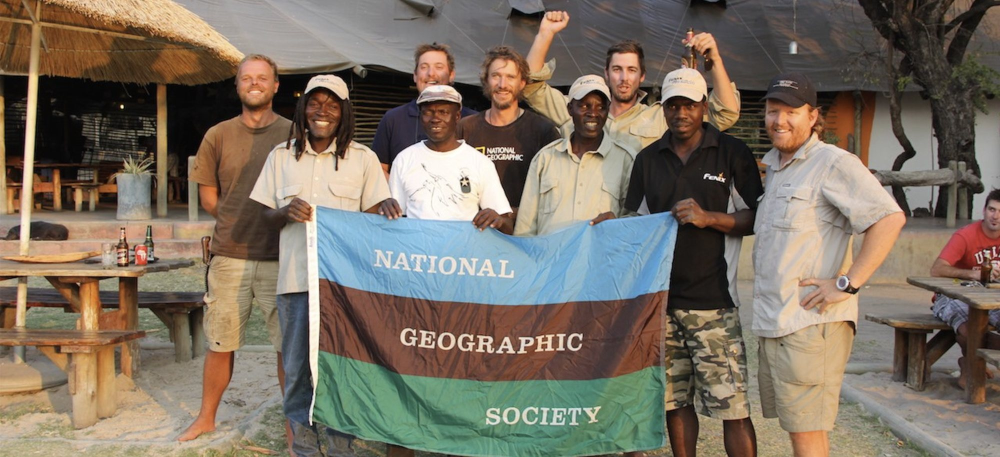
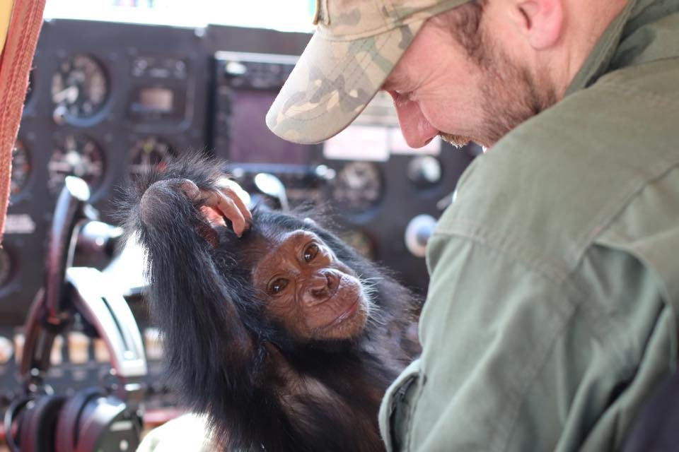
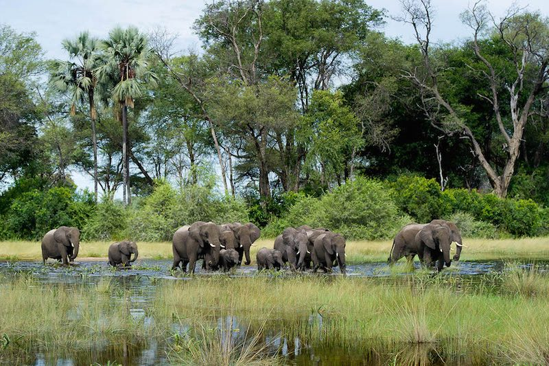
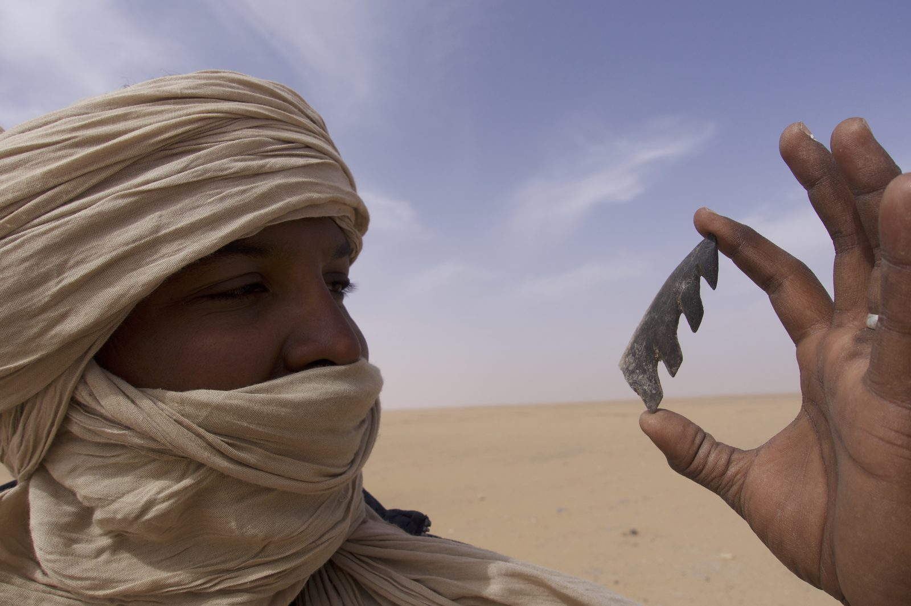
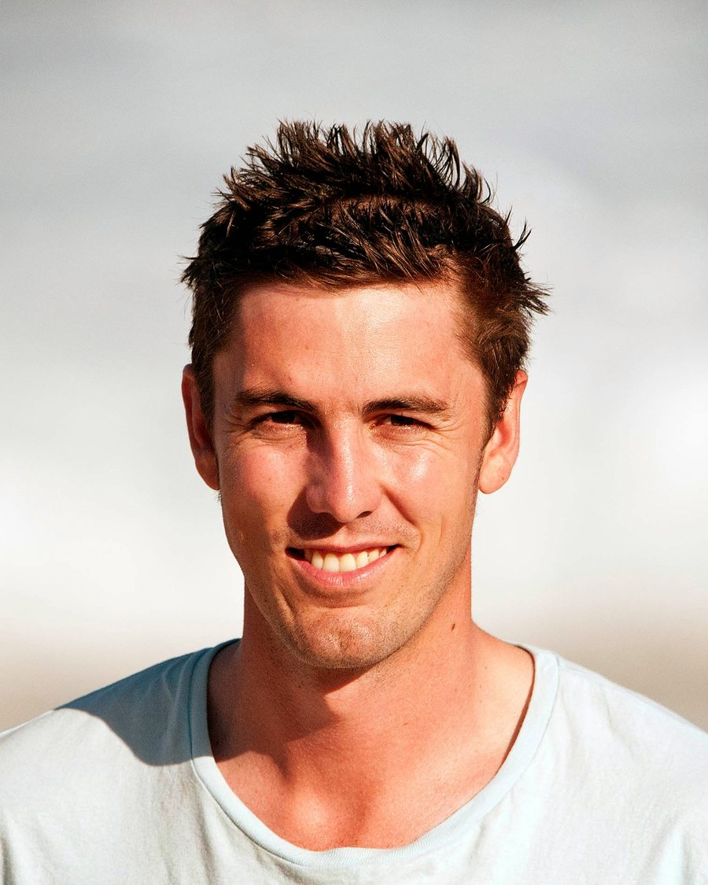

Paul Steyn
Writer, journalist & documentary filmmakerCape Town, South Africa

Paul Steyn writes and makes films about wildlife, conservation, and the people caught up in both — mostly in Africa. For more than a decade he has been a regular contributor to National Geographic, reporting from the Okavango Delta, the Zambezi Delta, Kruger National Park and the eastern Congo.
He directs and edits non-fiction, and is drawn to patient, character-led stories: the caregiver as much as the chimp, the chief as much as the lion.
NowIn post-production on a feature documentary.
Selected writing for National Geographic
- 2021 Central African sanctuary gives hope to chimps—and their rescuersNational Geographic Magazine · Photographs by Brent Stirton
- 2019 Texas hounds chase down rhino poachers in South AfricaNational Geographic
- 2019 How the world's largest lion relocation was pulled offNational Geographic
- 2014 Counting elephants from the air in Africa's newest World Heritage SiteNational Geographic
- 2014 Paul's JohannesburgNational Geographic Travel
A fuller archive of Paul Steyn's journalism is on Muck Rack.
Film
Paul's film work grew out of the reporting. The same stories he was writing — a sanctuary in the Congo, a lion relocation in Mozambique — asked to be told with a camera, and over time he moved from writing about the people doing the work to sitting in the edit with their footage.
He directs and edits long-form non-fiction and ongoing series work, from field shoot through to fine cut, grade and music. The feature documentary he is finishing now is the culmination of several years of that.



Background
Before journalism, Paul Steyn guided across southern Africa and edited a travel magazine. In 2013 he crossed the Okavango Delta by mokoro on a 250-kilometre research expedition with Bayei polers and scientists; in 2014 he flew aerial survey transects with Elephants Without Borders for the Great Elephant Census. That fieldwork is still where most of his stories start.
